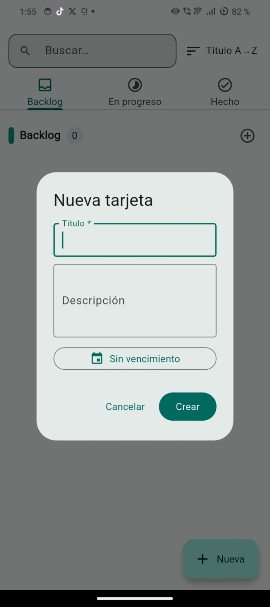

KanbanApp: tareas claras, cero distracciones
Crea tarjetas, muévalas entre Backlog, En progreso y Hecho, marca vencimientos y mantén el control visual de tu día. Todo rápido y sin necesidad de registrarte.
- Sin registro
- Datos guardados localmente
- Modo oscuro del sistema
- Búsqueda y orden

Características
Pensada para usarse al instante, sin cuentas ni complejidad innecesaria.
Crear tarjetas al vuelo
Añade título, descripción y fecha de vencimiento desde un solo diálogo.
Flujo visual claro
Mueve una tarea de Backlog → En progreso → Hecho con un toque.
Búsqueda y orden
Filtra por texto y organiza por creación, vencimiento o título.
Ligera y offline
La app funciona sin conexión. La información vive en tu dispositivo.
Interfaz accesible
Tipografía clara, tamaños cómodos y buen contraste para leer rápido.
Privacidad primero
No pedimos login. No subimos tus tareas a servidores externos.
Capturas
Capturas reales de KanbanApp en Android.
Preguntas frecuentes
¿Necesito crear una cuenta?
No. KanbanApp funciona sin registro y no solicita inicio de sesión.
¿Dónde se guardan mis tareas?
Todo se guarda localmente en tu dispositivo. No enviamos tus notas a ningún servidor.
¿Puedo exportar mis datos?
Actualmente, el contenido vive en tu teléfono. Tú tienes el control total. (Cuando ofrezcamos exportación, se mostrará claramente dentro de la app).
¿Qué permisos usa?
No pedimos permisos especiales. Solo utilizamos almacenamiento interno de la propia app para guardar tus tareas.
Política de Privacidad / Privacy Policy / 隐私政策
Última actualización: 25 Oct 2025
Resumen en español
KanbanApp (“la App”) es desarrollada y ofrecida por el desarrollador (“nosotros”). Esta Política de Privacidad explica cómo se maneja tu información. KanbanApp está pensada para funcionar sin registro y sin conexión: las tareas se guardan localmente en tu dispositivo y no se suben automáticamente a ningún servidor.
1. Información que se guarda
• Tareas, títulos, descripciones y fechas de vencimiento que tú escribes.
• Preferencias locales de la app (por ejemplo modo oscuro, orden, filtros).
• Información técnica básica del dispositivo (versión de Android, idioma) que el sistema Android ya proporciona internamente para que la app funcione correctamente.
No solicitamos inicio de sesión, correo, número de teléfono ni datos sensibles de identidad.
2. Para qué usamos esa información
• Mostrar tus tareas en el tablero Kanban (Backlog / En progreso / Hecho).
• Permitir búsqueda, orden y marcado de vencimientos.
• Mejorar estabilidad y funcionamiento básico de la app.
No vendemos tu información personal.
3. Compartición de datos
• No enviamos automáticamente tus tareas a servidores de terceros.
• No compartimos tus tareas con anunciantes.
• Solo podríamos compartir información si la ley lo exige (por ejemplo, una orden legal válida).
4. Retención y control
• Tus datos viven en tu dispositivo hasta que tú los borres o desinstales la app.
• Si borras una tarea dentro de la app, se elimina de tu almacenamiento local.
• Si desinstalas la app, Android elimina los datos locales asociados.
5. Tus derechos
Según la ley aplicable, puedes: (a) acceder a tu información (ya visible en la app), (b) editarla o borrarla manualmente, (c) desinstalar la app para eliminarla del dispositivo. Si en el futuro agregamos funciones en la nube o cuenta, incluiremos opciones adicionales de acceso, corrección y eliminación.
6. Seguridad
Protegemos los datos usando el almacenamiento interno/local del sistema operativo. Aun así, ningún sistema es 100% invulnerable. Recomendamos mantener tu dispositivo bloqueado y actualizado.
7. Menores de edad
KanbanApp no está dirigida a menores por debajo de la edad mínima legal local para dar consentimiento digital sin tutor. No recopilamos conscientemente información personal de menores.
8. Contacto
Si tienes preguntas sobre privacidad o quieres ejercer derechos de acceso/borrado cuando haya
funciones en la nube, escríbenos a:
support@kanbanapp.app
9. Cambios de esta política
Si actualizamos esta Política de Privacidad, lo indicaremos aquí con una nueva fecha de “Última actualización”. El uso continuo de la app después de un cambio implica que aceptas la versión actualizada.
English Summary
KanbanApp (“the App”) is provided by the developer (“we”, “us”). This Privacy Policy explains how your information is handled. KanbanApp is designed to run offline with no account: your tasks are stored locally on your device and are not automatically uploaded to any external server.
1. Information we store
• Task titles, descriptions, and due dates you create.
• Local app preferences (theme, sorting, filters).
• Basic device/app info (Android version, language) required for the app to function.
We do not ask you to sign in and we do not request personal identifiers such as phone number or email to use the core features.
2. How we use this information
• Display your tasks in Backlog / In Progress / Done columns.
• Provide search, sorting and due date reminders/visibility.
• Maintain stability and core functionality of the App.
We do not sell your personal information.
3. Sharing
• We do not automatically send your tasks to third-party servers.
• We do not share your tasks with advertisers.
• We may disclose limited information if required by applicable law or to protect legal rights and safety.
4. Retention and control
• Your data stays on your phone until you delete it or uninstall the App.
• Deleting a task removes it from local storage.
• Uninstalling the App removes its local data from the device.
5. Your rights
Depending on local law, you may: (a) view your data directly in the App, (b) edit or delete it yourself, and (c) uninstall the App to remove it from the device. If we add cloud sync or accounts later, we will add options for access, correction, and deletion requests.
6. Security
We rely on the device’s internal storage. No system is 100% secure, so please keep your device locked, updated, and protected.
7. Children
KanbanApp is not directed at children below the minimum legal age for digital consent. We do not knowingly collect personal information from children.
8. Contact
If you have privacy questions or wish to exercise access/deletion rights when online features become available,
contact us at:
support@kanbanapp.app
9. Changes
We may update this Policy. We will post the new “Last updated” date above. Continued use of the App after changes means you accept the updated Policy.
简体中文（中国大陆适用）
KanbanApp（“本应用”）由开发者（“我们”）提供。 本隐私政策说明我们如何处理您的信息。 KanbanApp 旨在本地离线运行：无需注册账号，您的任务数据仅保存在您的设备本地， 不会自动上传到外部服务器。
1. 我们保存的信息
• 您创建的任务标题、描述、到期日期；
• 本地偏好设置（例如深色模式、排序方式、筛选条件）；
• 设备/系统的基本信息（Android 版本、语言）用于保证应用的正常运行。
我们不会要求您登录；不会强制收集电话号码、邮箱等可识别个人身份的信息来提供核心功能。
2. 我们如何使用这些信息
• 在“待办 / 进行中 / 已完成”列中显示您的任务；
• 提供搜索、排序和到期提醒/可视标记；
• 保障应用的基本稳定性和功能。
我们不会出售您的个人信息。
3. 信息共享
• 我们不会自动将您的任务上传到第三方服务器；
• 我们不会向广告商分享您的任务内容；
• 仅在法律法规要求或为保护合法权益/人身安全的情况下，我们才可能向相关机构披露必要信息。
4. 保存期限与控制权
• 您的数据会一直保存在您的手机上，直到您手动删除或卸载本应用；
• 在应用中删除任务，即会从本地存储中删除该任务；
• 卸载应用时，系统会同时删除其本地数据。
5. 您的权利
根据适用法律，您可以：（a）直接在应用中查看您的数据；（b）自行修改或删除； （c）通过卸载应用让设备移除这些数据。 如果未来我们提供云端同步或账号功能，我们会同时提供访问、更正与删除请求的渠道。
6. 安全
我们依赖设备本地存储来保存数据。请注意，任何系统都无法保证 100% 安全， 建议您为设备设置锁屏密码并保持系统更新。
7. 未成年人保护
本应用并非专门面向未达到本地法律所规定的可独立同意年龄的未成年人。 我们不会在明知对方为未成年人的情况下主动收集其个人信息。
8. 联系方式
如您对隐私有任何疑问，或在未来出现云端功能时希望行使访问/删除等权利，
请联系我们：
support@kanbanapp.app
9. 政策更新
我们可能会更新本隐私政策。更新后，我们会在本页面上展示最新的“最后更新”日期。 您继续使用本应用即表示您接受更新后的政策。
Aviso inicial dentro de la app (cumplimiento 7.5)
Al primer inicio de KanbanApp (y antes de registrarse/iniciar sesión si en el futuro agregamos cuenta), se mostrará un aviso emergente que dice:
简体中文: “我们会在本设备本地保存您的任务数据，以便为您提供 KanbanApp 的核心功能（看板任务管理、搜索、到期提醒）。请阅读《隐私政策》了解您的权利。 点击‘同意’即表示您已阅读并同意。”
Este aviso cumple el requisito de Huawei de mostrar la política de privacidad claramente en el primer uso.